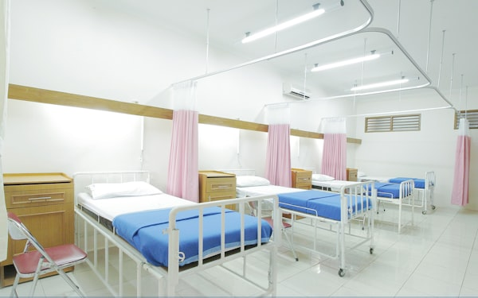
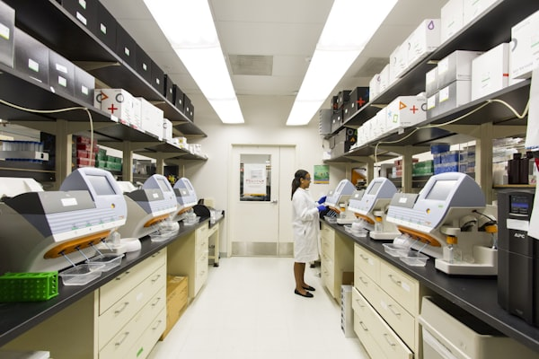

From exam prep to a haematology community — all in one place
Over 2,000 haematology questions, full-length mocks and the Essay Analyser for FRCPath essay practice — alongside a live professional community and current-awareness editorial that keep you sharp long after exam day.
Try every feature free for 15 days, no card needed — and the Social Hub, flashcards and editorial stay free for good.
Essay Analyser
82/100
Structured feedback returned
Compared against a model answer · study aid
You covered
Diagnostic criteria & WHO classification
First-line management per BSH guidance
To strengthen
!Cytogenetic risk stratification detail
Social Hub
Live discussion now
2,000+
Practice questions
47
Essay questions live
3
Mock papers live
49
Editorial articles
Who it's for
Built for the whole haematology team
ACE serves haematology professionals worldwide — from candidates preparing for their exams to consultants keeping pace with the guidelines. We're starting with the FRCPath and expanding to more haematology exams.
FRCPath Candidates
The full exam-preparation suite
The bank is built around the FRCPath curriculum: 2,000+ questions, full-length Part 1 mocks combining SBA and EMQ, and the Essay Analyser.
✓ Full explanations, references & peer comparison
✓ Essay Analyser, EMQ & mock papers

IMTs & Rotating Trainees
Depth, wherever your rotation takes you
Working through a haematology rotation or building depth for the MRCP curriculum? The bank, flashcards and study planner give structured, specialist practice.
✓ Flashcards & study planner
✓ Specialist topic practice
Consultants & Fellows
Stay current, stay connected
CPD-relevant editorial, a curated calendar of every major UK haematology event planned for you, and the Social Hub community — all live today. Built for the career beyond the examination.
✓ Editorial & events calendar
✓ Professional community

Biomedical Scientists
Designed with you in mind
Tailored BMS & IBMS editions are in development and not yet available — the live question bank, flashcards and editorial are open to everyone in the meantime.
In development
ACE Intelligence
Reviewed and kept current by ACE Intelligence
Haematology guidance changes constantly — BSH, NICE and ELN update, and new evidence lands between exams. Every question is written by experienced contributors, reviewed against current guidance, and continuously re-checked so that explanations stay current.
ACE Intelligence combines AI-assisted reviews with UK consultant haematologist oversight.
How content stays trustworthy
Written by contributors
Experienced haematology contributors draft every item.
Reviewed against guidance
Checked against BSH, NICE and ELN where relevant.
Kept current
Regular ACE Intelligence scans flag outdated guidance and superseded evidence, so explanations are refreshed fast — every change checked by a UK consultant.
Signature feature · One of a kind
Essay practice, graded like a real examiner
Write a timed essay and our AI grades it like a real examiner — structured feedback on what you covered, what you missed and how to improve, in seconds. No more waiting weeks for a consultant to mark your work. The bank is growing towards 100 essays, with 47 available now.
Automated feedback is a study aid, not a formal mark or a prediction of examination outcome.
Example — structure of feedback
AI-generated against a model answer.
Coverage of key pointsStrong
Use of current guidanceGood
Depth & prioritisationDevelop
"Strong on diagnosis and first-line management. To improve, add cytogenetic risk stratification and reference the relevant BSH guideline."
The platform
One platform. Every tool.
Every tool you need to prepare for FRCPath — each one specialist, each one reviewed through the same process.
Question Bank
Every question comes with full worked explanations, referenced sources and peer comparison — see how your answer measures up against others. More than 2,000 published across Part 1 and Part 2, graded for depth.
Our signature tool, and one of a kind for FRCPath essays. Write a timed essay and receive immediate, structured feedback against a model answer. A bank growing towards 100, with 47 available now.
Peer benchmarking and analytics — compare every answer against the whole community to see exactly how you did, with insights that surface your weaker topics.
Find a study buddy, chat with friends, follow contributors and share exam tips — plus discuss cases with trainees and consultants, between exams and well beyond them.
Find a study buddy
Match with peers preparing for the same exam and revise together — accountability that keeps you on track.
Chat, like, follow & share
Message friends, follow contributors, and like and share posts across the community.
Share exam tips
Swap revision strategies, exam-technique tips and guideline updates with trainees and consultants.
Create a free account and get a 15-day trial of every feature — no card needed. The question bank, the Essay Analyser and mock papers are all yours during the trial, and the Social Hub, flashcards and editorial stay free for good.
 FRCPath Candidates
FRCPath Candidates